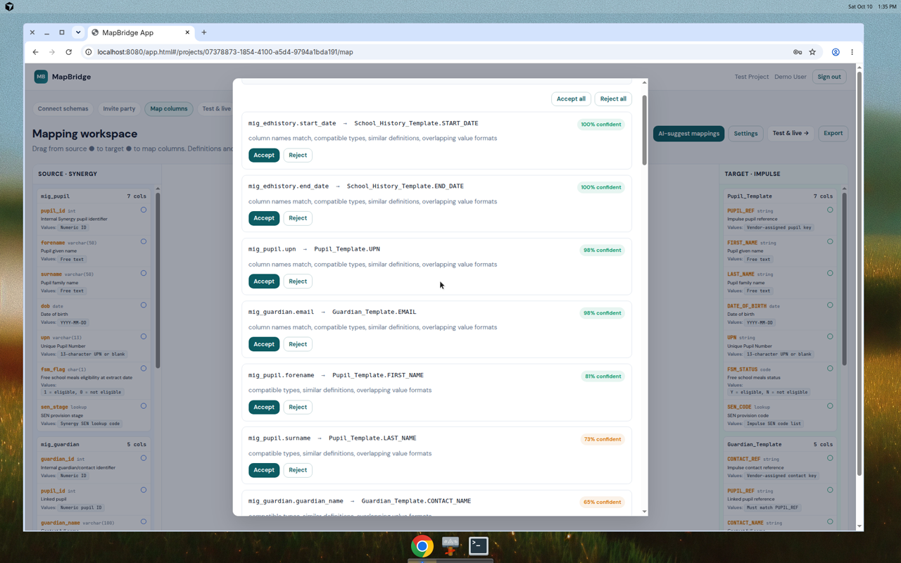
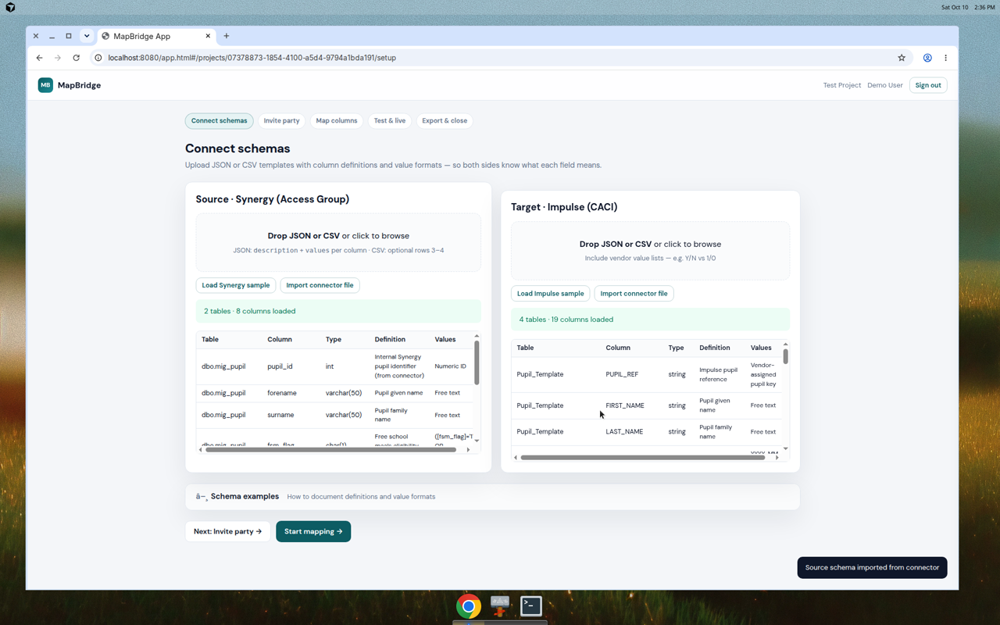

Are you replacing a finance, HR, housing, CRM or case management system? We work with you and your supplier. We match every field in the old system to its place in the new one. MapBridge shows what is missing. It records who checked and approved each field.
MapBridge currently runs in your web browser, and we use it with you during your project.
Mistakes hide in spreadsheets, and it is hard to show who checked what.
Changing systems puts years of records at risk. Mistakes hide in the spreadsheet that matches old fields to new ones, and it is hard to show who checked what.
We run the migration with your team and your supplier. MapBridge suggests matches, your people approve them, and every test and sign-off is recorded by name.
Fields with no match are flagged, so nothing is dropped by accident. MapBridge never needs personal records. You finish with a record you can show auditors.
Four steps from the list of old fields to sign-off on every match.
You give us the list of fields in your old system, and your supplier gives us the list for the new system. Just field names and types, not the data itself.
MapBridge looks at field names, types and notes to suggest which old field goes to which new field. You and your supplier review the suggestions.
Your supplier sends test data through. Your team checks it matches what you expected. MapBridge records who checked and when, field by field.
Once all fields are checked in test and then in live, you sign them off. MapBridge gives you a full record of who approved what and when.
These features work now and are being used on real projects.
MapBridge reads the field names, types and notes from both systems and suggests which fields match. You review the suggestions and approve or reject each one. The approval is recorded by your name.
You can use the built-in matcher (works offline, no API key needed) or connect your own AI API key for smarter suggestions. Only field definitions are sent, never personal data.

When the old system uses different codes to the new one (like 1 and 0 instead of Y and N), MapBridge spots this and suggests the translation. You approve it, and the SQL export includes the translation rule.

For each matched field, you record who sent test data, who checked it, who pushed to live, and who signed it off. Each step is recorded by name and date. Nothing is anonymous.
MapBridge writes starter SQL queries for your supplier, with the translation rules already in place. This gives them a head start on writing the real migration queries.
If you use SQL Server or Oracle, your IT team can run our read-only tool inside your network. It reads the list of fields (not the data) and gives MapBridge the field names and types. No access to personal records.
See the technical guide and security document for IT.
MapBridge runs in your web browser. All data is stored on your computer, not on a server. We use it with you during your migration project.
| Feature | Status |
|---|---|
| AI-suggested field matches | ✓ Works today |
| Value and code translations | ✓ Works today |
| Sign-off tracking field by field | ✓ Works today |
| Starter SQL export | ✓ Works today |
| Read-only tool for SQL Server and Oracle | ✓ Works today |
| Shared online workspace with invites and roles | Coming next |
| Data quality checks (null rates, value ranges) | Coming next |
| Reconciliation of counts and totals | Coming next |
| Cutover plan generator | Coming next |
What data moves where, and what the AI mode sends.
Reads: Field names (like employee_id or start_date), field types (like number or date), allowed values (like Y and N), and field notes from your supplier.
Never reads: Employee names, salaries, addresses, or any other personal data. The read-only tool for SQL Server and Oracle only queries the system catalog (the list of tables and fields), not the tables themselves.
Where it's stored: In the web browser on your computer. Not on a server. When you close the browser, it stays on your computer unless you clear your browser data.
If you use the built-in matcher: Nothing is sent anywhere. It runs entirely in your web browser.
If you use your own AI API key: Only field names, types, and notes are sent to the AI service you choose (like OpenAI or Azure). No employee names, salaries, or any personal data. Your API key is stored in your web browser only.
For full technical details, see our connector technical guide and security document for IT and DPOs.
Moving from one system to another puts years of records at risk. MapBridge helps you track every field match and show auditors who checked and signed off what.
Used for migrations in finance, HR, housing, case management, and other core systems.
If you are moving to a new finance system, HR system, CRM or other core system, MapBridge helps you and your supplier agree what goes where and track who approved it.
Particularly useful for businesses with strict audit requirements or regulated data.
MapBridge is built by Alex Osborne of Foam Works Digital. Alex specialises in product-led transformation for councils and businesses replacing core systems.
Previously Acting Head of Product at Ocado Technology, and product transformation roles at Investec. Recent work includes council migrations at Caerphilly and other public bodies.
See case studies and connect on LinkedIn.
No. MapBridge helps you and your supplier agree which fields match between the old system and the new system. Your supplier writes the queries that move the data.
No. MapBridge only needs the list of field names and types. For example, it needs to know there is a field called employee_id of type number, but it does not need to see any employee names or salaries.
In your web browser on your computer. Not on a server. When you close the browser, the data stays on your computer unless you clear your browser data.
It looks at field names, types and notes to suggest which old fields match which new fields. You can use the built-in matcher (runs in your browser, no API key) or connect your own AI API. Only field definitions are sent, never personal data.
MapBridge is included when Foam Works Digital runs your migration. For pricing, book a call with Alex.
Book a 30-minute call to discuss your move to a new system.
Book a call with Alex